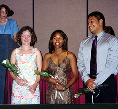

2005
- Student Board Members
Tracey Bridges,
Deidra Cody, Anita Coleman
Tracey
Bridges is the president of Omicron Alpha Kappa Chapter at The
University of North Carolina at Greensboro. She is a senior,
majoring in Human Development and Family Studies and plans to
attend graduate school to obtain a PhD in an HDFS-related
field. Tracey has particular interest in the developmental
transition from adolescence into adulthood. While at UNC-G,
she has worked as an Undergraduate Research Assistant on the
Children's Friendship Project being conducted by Dr. Anne
Fletcher and Dr. Andrea Hunter.
Deidra
Cody is the past-president of Nu Alpha Chapter at Berea
College and a recent graduate. Her major was Child and Family
Studies with an emphasis in Dietetics. She is currently
attending Northern Illinois University as a graduate student
in Nutrition Science and beginning a dietetic internship,
emphasizing food service management. She spent her summer
teaching Financial Management Courses to low-income families
in Kane County, Illinois. She is excited to serve on the KON
Board. Her first experience at Conclave motivated her in many
new ways! She looks forward to seeing members in Dallas in
2007
Anita
Coleman is the president of Kappa Alpha Chapter at Northwest
Missouri State University. She returned to college after 20
years in business, and is working toward a bachelor's degree
in Dietetics and Food Service Management and an MBA with a
health emphasis. During the academic year she will be working
in the Upward Bound Youth Program at the University. She is
excited about the opportunity to serve on the Kappa Omicron Nu
Board.
2003
- Student Board Members
Renee Santos,
Erika Barnhart, Cathy Schon with Karla Hughes, Board Chair
2001
- Student Board Members

Kristie Shaub, Tambra
Stevenson, Fotu Soliai
|